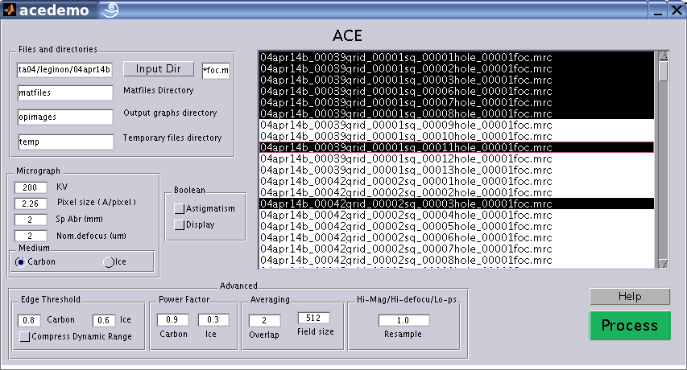

ACE DEMO Documentation

Files and directories:
Space 1 : The input file ( MRC format );
Space 2 : A directory for storing the mat files. Mat files store the CTF parameters for subsequent use for correction.
Space 3 : The directory for output graphs. Two graphs are stored. One of them shows the result of edge detection and ellipse fitting. The other shows the various stages of the algorithm.
Space 4 : Directory for storing the temporary files generated.
Micrograph:
KV : The operating voltage of the microscope.
Pixel size : The size of the pixel in Angstroms/pixel
Spherical Aberration: The spherical aberration of the objective lens.
Nominal Defocus: An approximate defocus value to fall back on in case the edge detection fails.
Medium: Carbon or ice. This is a means of specifying the signal strength of the data. If negative stained data is used, you can use "ice" option.
Boolean:
Astigmatism: Turns on astigmatism estimation.
Display: If the display is turned on, two output graphs are stored in the output graphs directory.
Advanced:
Edge Threshold : The threshold set for edge detection for carbon and ice images. These values should be increased if the more edges detected in the power spectrum than the an elliptically shaped ring. Similarly if no edges are detected, the value should be decreased. Usually one should not need to change these values because ACE searches thru a range of values to get a good threshold.
Compress Dynamic Range: For ice images if the signal to noise ratio looks very good ( i.e. Thon rings are very prominent ) and still the result of edge detection is incorrect, check this option.
Power Factor: This determines the location of the upper cutoff frequency. If you notice that there are ripples visible in the power spectrum even beyond the upper cutoff frequency you can increase this value to accommodate more part of the power spectrum. The value should be decreased if the signal to noise ratio is less and only a few ripples are visible.
Averaging overlap and Field size: Smaller images are cropped from the image (micrograph) given to the program. The power spectrum is found for all small images and they are averaged to improve signal to noise ratio. Field size refers to the width of each small image cropped. An Averaging overlap of "a" implies that the successive images have an overalp of (1-a)*field size. In other words a higher value of Averaging overlap means more number of smaller images are used for averaging. If the signal to noise ratio is very low, the averaging overlap should be changed for better estimate of power spectrum.
Hi-mag/Hi-defocus/Lo-ps: When the defocus is large or the pixel-size is very small ( which is equivalent to Hi-magnification) the first zero of the CTF might be too close to the origin. Increase the value of resample.
Help: Displays this page.
Process: Starts processing the micrograph.
Console Output: The console (the command prompt in MATLAB desktop ) displays partial results in the following format. An example is also shown.
| Filename | Nominal Defocus | Crude defocus estimate | Refined defocus1 estimate | Refined defocus2 estimate | Amplitude contrast | Astigmatism ratio | Astigmatism angle |
Confidence on results |
| filename.mrc | 2.000000 | 2.068837 | 1.975 | 2.15 | 0.06 | 0.96 | 55.5 | 0.9 |